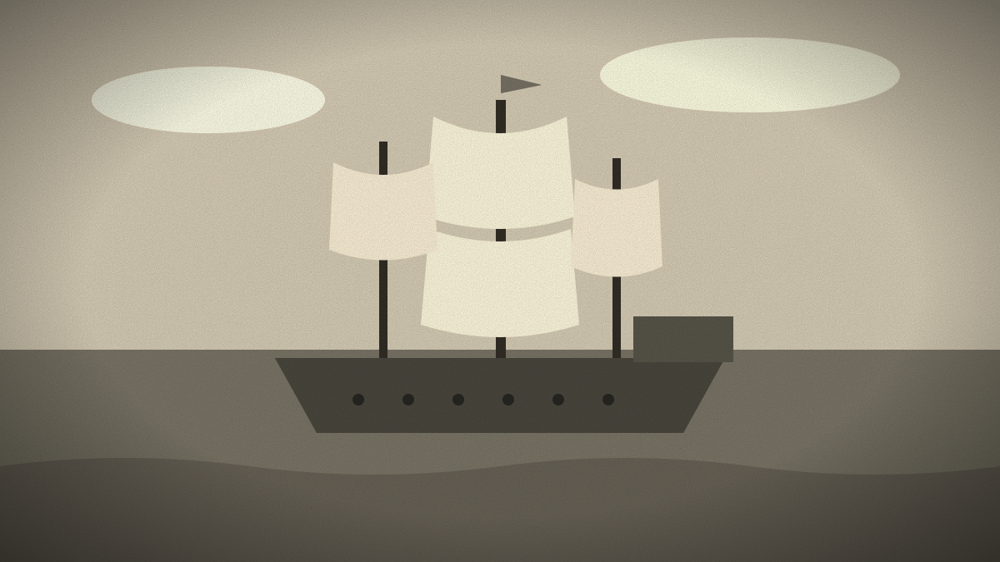
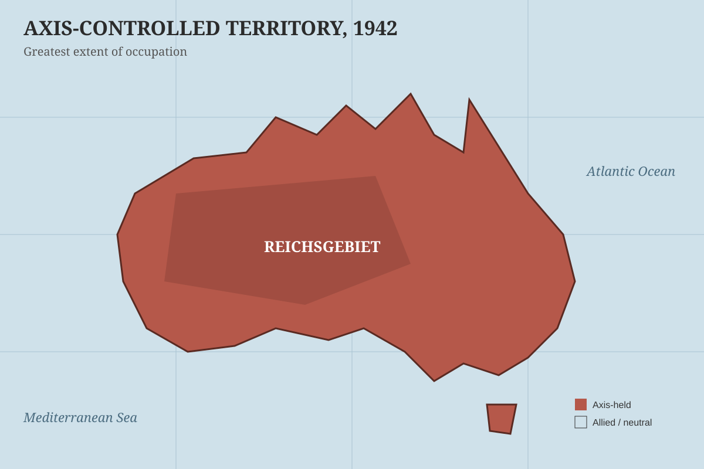
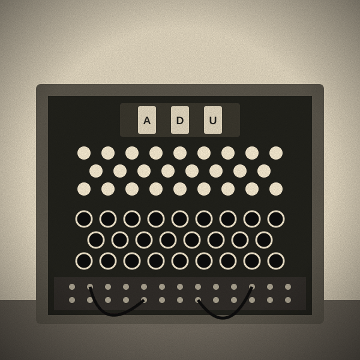
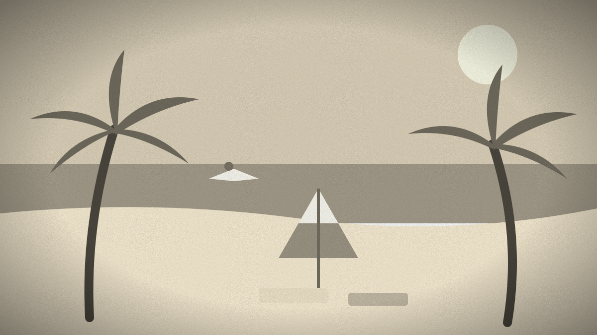
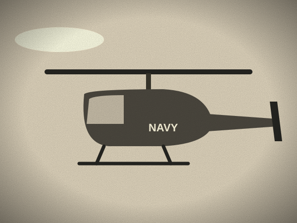

History · Long Read
World War II: The War That Changed Everything
From the invasion of Poland to the surrender in Tokyo Bay, a look back at the largest conflict in human history and the decisions that shaped the modern world.

The road to war
The Second World War did not begin in a single moment, but historians generally mark its start as 1 September 1939, when Germany invaded Poland. Two days later, Britain and France declared war on Germany, honoring their guarantee of Polish independence.
The years before had been full of warnings. Adolf Hitler had become Chancellor of Germany in January 1933, rearmed the country in open defiance of the Treaty of Versailles, remilitarized the Rhineland in 1936, and annexed Austria in 1938. At the Munich Conference that September, British Prime Minister Neville Chamberlain agreed to let Germany take the Sudetenland from Czechoslovakia, famously declaring that he had secured "peace for our time."
Blitzkrieg and the fall of France
After months of relative quiet, the so-called "Phoney War", Germany struck west in May 1940. Its armored divisions pushed through the Ardennes forest, bypassing the heavily fortified Maginot Line. France fell in about six weeks. Between 26 May and 4 June, more than 330,000 Allied soldiers were evacuated from the beaches of Dunkirk by a fleet of naval vessels and civilian boats.
In Britain, Winston Churchill had become Prime Minister in May 1940, and he would lead the country through its darkest months. During the Battle of Britain in the summer and autumn of 1940, the Royal Air Force held off the Luftwaffe, forcing Hitler to postpone his planned invasion of the British Isles indefinitely.
The Eastern Front
On 22 June 1941, Germany broke its non-aggression pact with the Soviet Union and launched the largest land invasion in history, code-named Operation Barbarossa. More than three million Axis troops advanced along a front stretching from the Baltic to the Black Sea.
The war in the east would prove to be the deadliest theater of the conflict. The siege of Leningrad lasted nearly 900 days. At Stalingrad, after months of brutal street fighting, the encircled German Sixth Army surrendered in February 1943, a defeat that marked the turning point of the war in Europe.

America enters the war
On the morning of 7 December 1941, Japanese aircraft attacked the U.S. Pacific Fleet at Pearl Harbor, Hawaii. More than 2,400 Americans were killed. The next day, President Franklin D. Roosevelt called it "a date which will live in infamy," and Congress declared war on Japan. Germany declared war on the United States a few days later.
Six months later, the Battle of Midway in June 1942 changed the balance of power in the Pacific. In a single decisive engagement, Japan lost four aircraft carriers while the United States lost one, as American codebreakers' advance knowledge of Japanese plans allowed the U.S. Navy to blunt the Japanese advance.
Breaking the codes
Some of the war's most important work happened far from the front lines. A team of mathematicians and analysts, including Alan Turing, worked to break the German Enigma cipher at Bletchley Park. The intelligence they produced, known as "Ultra," is credited with shortening the war by as much as two years.

The Enigma machine used a series of rotating wheels, or rotors, to scramble each letter typed by the operator. With settings changed daily, the number of possible configurations was about 159 quintillion, which is why the Germans believed the system was unbreakable.
D-Day
On 6 June 1944, the Western Allies launched Operation Overlord, the largest seaborne invasion in history. Around 156,000 American, British, Canadian, and other Allied troops came ashore on the beaches of Normandy, supported by thousands of ships and aircraft. Within weeks, more than a million Allied soldiers were in France, and Paris was liberated that August.

The Holocaust
As Allied forces advanced into Germany and Poland, they uncovered the full scale of the Nazi regime's crimes. In the Holocaust, approximately six million Jews were systematically murdered, along with millions of others, including Roma, disabled people, Soviet prisoners of war, and political opponents. Camps such as Auschwitz-Birkenau, Treblinka, and Sobibor became symbols of genocide.
Victory in Europe
Soviet troops reached Berlin in April 1945. Hitler died by suicide in his bunker on 30 April, and Germany surrendered unconditionally a week later. Victory in Europe Day was celebrated on 8 May 1945. President Roosevelt did not live to see it: he died on 12 April 1945 and was succeeded by Harry S. Truman.
The end in the Pacific
The war against Japan continued through the summer. On 6 August 1945, the B-29 bomber Enola Gay dropped an atomic bomb on Hiroshima. A second bomb fell on Nagasaki three days later. Japan announced its surrender on 15 August, and the formal instrument of surrender was signed on 2 September 1945 aboard the USS Missouri in Tokyo Bay.

The cost and the legacy
World War II was the deadliest conflict in human history. An estimated 70 to 85 million people lost their lives, a majority of them civilians. The Soviet Union and China suffered the heaviest losses.
The world that emerged was transformed. The United Nations was founded in October 1945 to prevent future wars. Europe was divided between East and West, setting the stage for the Cold War. The United States and the Soviet Union emerged as superpowers, and the dismantling of European colonial empires accelerated across Asia and Africa.
Eighty years on, the war still shapes the borders, alliances, and institutions of the modern world, and the memory of what was lost continues to inform how nations think about peace.